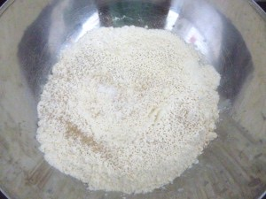
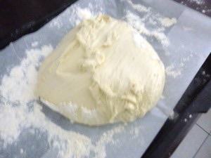
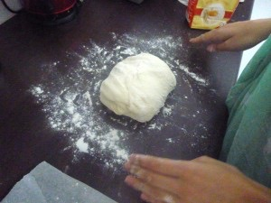
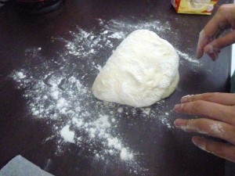
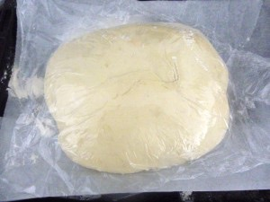
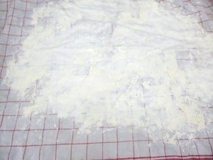
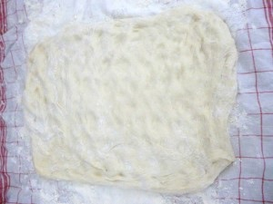
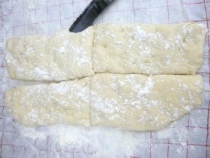
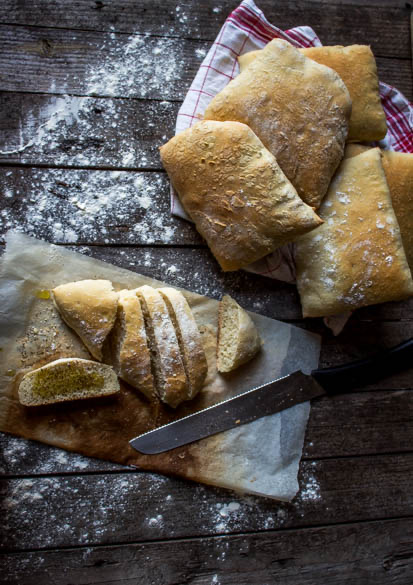

Pain ciabatta maison

Comment réaliser un bon pain ciabatta?
Telle est la question que je me suis souvent posée car la ciabatta est à 100% notre pain favori.
La ciabatta est un pain italien caractérisé par un taux d’hydratation élevé et surtout par la présence d’huile d’olive qui lui confère son moelleux.
C’est un pain croquant avec une mie bien alvéolée.
A partir d’une pâte à ciabatta on peut tout faire; des fougasses, des focaccias, on peut aussi l’utiliser (et c’est surtout ça que j’adore) pour en faire de délicieuses tartines 🙂
Vous trouverez ICI une recette de tartines faites avec ce bon pain
J’ai lu sur internet, dans des bouquins, un paquets de recettes mais je n’étais pas vraiment convaincue! Il faut dire qu’en ce qui concerne la boulange je suis toujours assez frileuse de tenter n’importe quelle recette. Puis, je suis tombée sur la recette du pain ciabatta de Frédéric Lalos qui est un artisan boulanger et meilleur ouvrier de France alors la je n’ai pas hésité une seconde et le résultat fut au rendez-vous!!!
Je réalise très régulierement cette recette. Au départ je me calquais vraiment sur la recette de Frederic Lalos qui pétrit à la main (comme moi sur les photos de la recette) et je dois dire que j’étais un peu découragée par moment car c’est vrai que c’est assez long.. Depuis peu, j’utilise mon robot avec le crochet pétrisseur et je dois dire que c’est un sacré gain de temps. Le pain ciabatta que j’obtiens et toujours aussi bon 🙂 .
Donc allez y n’hésitez pas à faire vous même votre ciabatta avec cette recette car vous ne serez pas déçus!
Enregistrer
Enregistrer
Ingrédients
- farine t55 - 520g
- sel - 10g
- levure boulangère déshydratée - 5g
- huile d'olive - 35g
- eau - 300g
- sucre - 1 pincée
Instructions
- Dans une jatte, mélanger le sel et la farine
- Mettre les 300gr d'eau tiède (pas plus de 50° sinon la levure va "mourir") dans un récipient (de préférence transparent) et y ajouter la levure boulangère ainsi que la pincée de sucre et mélanger un peu Astuce: je mets ensuite ce mélange sur mon radiateur que j'ai préalablement chauffé et je laisse la levure agir. Cela prend environ 5 min, vous savez que c'est prêt quant une mousse blanchâtre apparaît en surface.
- Ajouter alors ce mélange eau+levure et l'huile d'olive à la farine
- Commencer à pétrir ATTENTION : vous allez obtenir une pâte très collante mais ne rajouter pas de farine. Seul le pétrissage fera que la pâte ne collera plus. Pour pétrir sans l'aide d'un robot : Sur votre plan de travail, pétrir pendant bien 20-30 minutes votre pâte jusqu’à ce qu'elle ne colle plus à la table et vous obtiendrez une pâte bien élastique (la prochaine fois je pense essayer avec le crochet de mon robot)
- Couvrir d'un linge propre et laisser reposer pendant minimum 1h à température ambiante.Astuce : A chaque étape de "pousse" (lorsque je laisse reposer la pâte soit 3fois dan cette recette) je fais préchauffer mon four à 70°. Une fois mon four chaud je l’éteins et je place ma pâte recouverte d'un torchon à l'intérieur de celui-ci.
- Procéder au "pliage"de la pâte : afin d'obtenir une pâte bien consistante et de beaux pains il va falloir rabattre la pâte 4 fois sur elle même
- Recouvrir du même linge et laisser reposer de nouveau pendant 1h minimum à température ambiante (pensez à ma petite astuce du four expliquée plus haut)
- Fariner un torchon sur votre plan de travail et poser la pâte dessus
- L'étaler du bout des doigts de manière régulière (ne l'aplatissez pas ni au rouleau ni avec la paume des mains)
- Couvrir et laisser reposer 1h à 24-25° (pensez à ma petite astuce du four expliquée plus haut)
- Fariner légèrement le dessus de la ciabatta pour obtenir plus tard a la cuisson une croûte rustique
- Couper la pâte de la taille des pains ciabatta que vous souhaitez obtenir
- Enfourner à 210° pendant 20 min (four à chaleur tournante) Vérifier la cuisson pour s'assurer d’obtenir une croûte bien dorée









Les tips de la communauté
Pain très apprécié, considéré comme recette incontournable. Beaucoup de retours positifs même si quelques lecteurs ont rencontré des défis avec les temps de pousse et la température. L'auteure confirme que c'est son pain quotidien du vendredi.
Astuces
- Respecter strictement les 3 temps de pousse pour obtenir vrai ciabatta avec bonne alvéolation
- Ne pas mettre en boule avant enfournage, laisser à plat pour évacuer gaz et éviter mie compacte
- Si impossible d'avoir 24-25°C, préchauffer le four puis l'éteindre pour mettre la pâte
- Utiliser chaleur tournante au milieu du four sur plaque sèche
- Machine à pain fonctionne bien pour pétrissage initial
- Cuire à 225°C pour croûte parfaite
- Se conservent bien enroulés dans un torchon, peuvent être préparés la veille
Variantes suggérées
- sandwich italien !
Ajustements signalés
- Ne pas évacuer le gaz en mettant en boule - laisser plat et faire gonfler naturellement
- Réglez température du four selon les conditions et le résultat voulu
- Les 3 pousses successives sont essentielles pour obtenir le résultat caractéristique